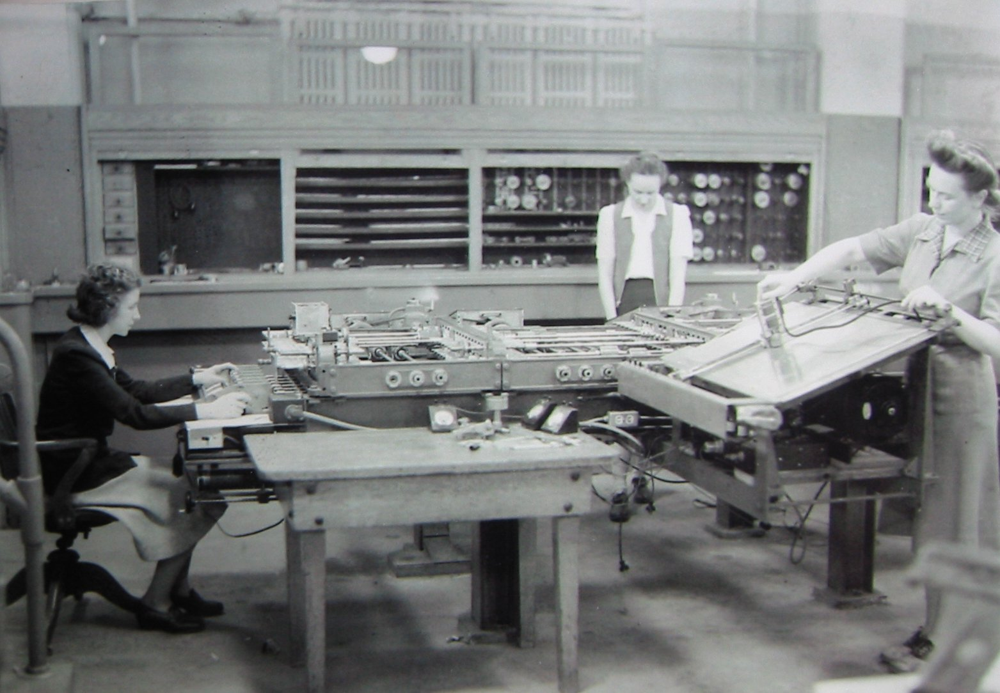

Where Are the Humans?
Download PDF · DOI: 10.5281/zenodo.20018252

{kind=link}
“Machines will be capable, within twenty years, of doing any work a man can do.”1
That was Herbert Simon in 1965 (speaking in the context of artificial intelligence research). The claim — this time, the machine will do it without us — is restated by every computing generation, and every previous generation has been right in spirit and wrong on timing. Often by decades.
The question to ask of any such claim is not whether humans are still involved, but where in the system they sit. That reframe is David Mindell’s.2 What follows is a five-role grammar for answering it — names old enough to be recognizable in any era of computing.
The history is short. Newton’s calculus made physics a question of rates of change. The 18th century produced equations faster than anyone could solve them — and in 2026 some still resist a general solution.3 By 1821, Charles Babbage was looking up from a table of errors and writing “I wish to God these calculations had been executed by steam.”4 Layer by layer: by hand, in rooms full of women at desks, then by patch cable, then by FORTRAN, then by MATLAB, then by CUDA — every layer one further abstraction from the work it was doing. Now learning is entering the picture.
The implementation keeps changing, but the structure of the work, problem → translate → execute → validate, is persistent. The same five roles run through every era:
Investigator: Names what is to be modelled. The principal investigator, the one who decides the question is worth asking. Tools come and go; the PI’s framing is what makes the work matter. Newton asking why planets move in ellipses. Von Neumann at Los Alamos framing the H-bomb hydrodynamics problem so it could be computed at all.
Compiler (in the broad sense): Translates a problem stated in domain language into operations the substrate can run. The role has existed since the mid-19th century — only its embodiment migrates: human “computers”, then patch panel, then software, then trained model. Each migration met scepticism. Even von Neumann, on first hearing of FORTRAN in 1954, asked “Why would you want more than machine language?”5 Gertrude Blanch as technical director of the WPA Mathematical Tables Project (1938–48), decomposing calculus into worksheets ~450 unemployed clerks could execute with arithmetic alone, may be the “most important compiler of the pre-electronic era.”
Dispatcher: Organizes the work, paces it, handles handoffs. Williamina Fleming managing “Pickering’s computers” at Harvard Observatory in the 1880s. Dana Mitchell organizing human-computer teams at Los Alamos in the 1940s. Tomasulo’s out-of-order dispatcher (1967) does it at the instruction level inside every modern CPU.
Debugger: Catches errors without trusting any individual step. L. J. Comrie’s differencing method at the British Nautical Almanac Office. Duplicate computation by independent clerks, with a third resolving disagreements — the ancestor of triple modular redundancy in modern fault-tolerant systems. The shape of the work catches the error, not the insight of any single computer — the same principle behind GPS message checksums and memory parity bits.
Validator: Confirms the answer matches reality. The role that has yet to move off the human side, in any era. The senior scientist spot-checking against physical intuition or limiting cases where the answer is known by other means. Worth noting: validation has been getting more load-bearing across every transition, because each new layer makes the intermediary harder to inspect from the inside. That trend is sixty years old.
These five labels have been recognizable for three centuries (albeit in hindsight); the next layer of computation may be the next place to look for them.
Footnotes
Herbert A. Simon, The Shape of Automation for Men and Management (Harper & Row, 1965); the line first appeared in his 1960 book The New Science of Management Decision.↩︎
David A. Mindell, Our Robots, Ourselves: Robotics and the Myths of Autonomy (Viking, 2015). Mindell was one of my PhD advisors.↩︎
The Clay Mathematics Institute’s Millennium Prize Problems include the existence and smoothness of solutions to the Navier–Stokes equations of fluid flow, with a $1 million prize for a proof. As of 2026 it remains unclaimed.↩︎
Charles Babbage, Passages from the Life of a Philosopher (1864), recounting an 1821 incident with John Herschel that prompted the Difference Engine.↩︎
As recounted by John Backus; see, e.g., his reflections in The New Stack.↩︎
Citation
@online{bingham2026,
author = {Bingham, Brian and Bingham, Brian},
title = {Where {Are} the {Humans?}},
date = {2026-05-03},
url = {https://carrel.bbingham.dev/posts/computing-history/where-are-the-humans/},
doi = {10.5281/zenodo.20018252},
langid = {en}
}